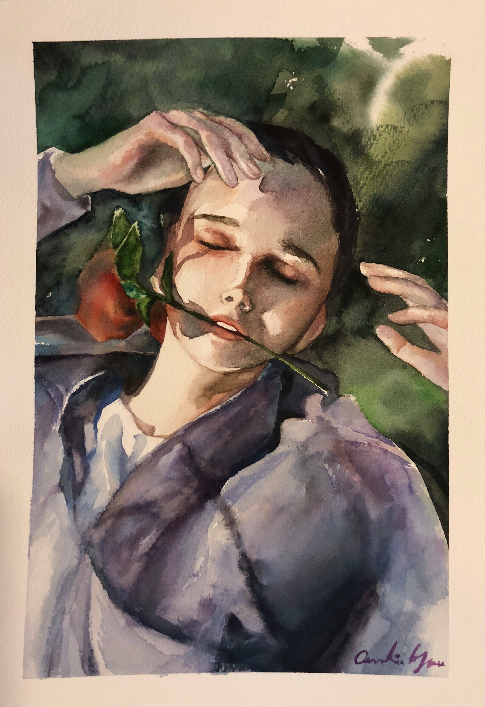

According to this article, most people are righthanded and have comfort-to-reach and hard-to-reach areas.Place interactive elements that can lead to monetization in the comfort-to-reach area, such as Store button, More apps, Ads. Users are likely to interact with these elements even by mistake -- dark-UX that is proven to maximize profit. Most bottom ads need at least 10px margin from it to serve guidelines. While all interactive buttons on your game will be activated on “touch end”, the store and the more-apps buttons should be activated on “touch begin”. Sliders become a very handy component to expose many options for extra content, without needing to navigate away from the main scene. Make it partly visible onscreen, animate from end and start upon launch and introduce the slider by automatic event or by user-initiated event, with a call-to-action of purchasing or unlocking. Pop-ups are good game components for delivering abstract and informational messages to users. Associate visible UI with hidden UI via animations, such as scale up upon opening and scale down upon closing. Have a semi transparent dim background behind pop-ups. Avoid the X, many users associate this with annoying popups and will close it instantly. Tapping the dim background should allow users to close the popup, and popups with rich text should show X or continue after 2 seconds of delay. User decisions which are good for your game are placed on the right side of the popup. Rewarded video offering - what's the prize, how to reward it and for how long? Permanent - prize for unlimited time; Per session - prize only available during current session, increase session time; Per scene - only at the current level; don't tell users what reward they're getting, make it a surprise and more exciting. Draggable objects - default anchor pointns are either top left corner or the exact center. Design anchor points at actual holding points in real word. Set a custom anchor-point offset on draggable objects so that users finger won't hide them. Grab area of small items should be larger than their actual canvas size. Dragged items should be in front of other items when dragged in terms of z-index. Glow or dashed-outline for drop zone areas. Pulling is easier than pushing (design for kids). Intro video should n't be longer than 20 seconds, should be accessible again from the cover page or settings menu. Invisible skip button, tpa to reveal, if not tapped disappear 2.5s later.
Visual Thinking Analysis on Viv's Image
1. This image is about sunglasses in doodle/cartoon style 2. The outline of the image is very clear cut and thick, colors are distributed evenly and gives a vector art look. The tones are black and tea color, and the figure is very 2D like. The image expresses a doodle style and reminds me of Andy Warhol's works. It leads the reader to imagine a collection of all kinds of different sunglasses in documentary style. 3. The most obvious aspect is that it is a pair of sunglasses probably from a collection of sunglasses of different styles. The mysterious aspect of the image is the purpose of the doodle style, perhaps it is to be displayed in a gallery that looks like a newspaper, drawn shop or doodle styled website. The vector art style makes me wonder if some parts of the fill colors will change when the user hovers above it.
Fig.2 - Sunglasses, Viv Yuan, Davis
Visual Thinking Analysis on My Own Image
1. This image is interesting from its watercolor art style property. It is painted with a rich color scheme with lots of variation between soft edges and hard edges. There is also a lot of color mixing going on. Overall the image creates a great vibe that is indulging to the viewer. It also captures attention with its colors and portrait. 2. This image is part of my art collection, in the watercolor or portrait category. 3. It gives the viewers an idea of my passion - art, and how it is represented in my artworks. It also introduces part of who I am to my audience. From my artstyle, it also tells part of my personality and the topics I enjoy focusing on.

Fig.1 - Rose, Caroline Yau, Beijing
How to use photographs to inspire visual thinking?
This article discusses how we can use photography effectively. Careful attention to detail rewards the viewer with a “big picture” understanding. Inspire people to observe what's going on in the picture. Include interesting details. Use photographs that can foster conversations. Introduce new ideas. To make the interaction interesting, interactive websites like this one often uses automatic animations on the page, interesting scroll behavior that differentiates different layers, and the more advanced ones include interactive transformation depending on the cursor location and movement. It also creates an aesthetic layout and spacing for an image gallery, with hover effect adding additional photographic details to an image. This photography heavy website effectively uses image slideshows and animations which is very intriguing and fun to look at! This website incorporates a creative image overlay that changes shape as you scroll.
Best Practices for Diaglog Windows
This article revisits how we should update our usage of dialog windows these days. A modal window is an element that sits on top of an application’s main window that creates a mode that disables the main window but keeps it visible with the modal window as a child window in front of it. Users must interact with the modal window before they can return to the parent application. It is used to grab reader's attention, acquire user input, and to show additional information in context. Do not use it for errors or warning messages, these should be kept on the page. Be sure to include an escape hatch, a way to close the modal with high visibility or mapping, such as clicking outside the window. Give a descriptive title about the modal to give conntext. Include buttons with actionable, understandable names. In terms of the sizing and location, it shouldn't be too big or too small, should be just right! Should not take up the whole screen view since its purpose is just to keep context. A new page should be created instead if a scrollbar is needed for the modal. In terms of location, it should be placed at the upper half of the screen because in mobile view modal may be lost if placed lower. In terms of size, it should not take up more than 50% of the screen. To improve focus, use a lightbox effect (darken the background) which draws attention to the modal and indicates that the user cannot interact with the parent page. Modals should be triggered by users, through clicking a button, selecting an option or following a link. It shouldn't surprise users because it may result in a quick dismissal of the window. Modals should not be used on mobile devices. To improve keyboard accessibility, the element that triggers the modal must be keyboard accessible. The keyboard focus needs to be moved to the top of the dialog once opened, and should be trapped inside the dialog until closed. Each overlay window must have a keyboard accessible control to close that window.
Lazy Loading with JavaScript
For even faster image load time, it is possible to use JavaScript for lazy loading. Here is a website I found that contains a comprehensive list of design principles and methods to optimize image load time. Lazy-loading is a technique that defers loading of non-critical resources at page load time. Instead, these non-critical resources are loaded at the moment of need. Where images are concerned, "non-critical" is often synonymous with "off-screen". A good example is the platform Medium who uses loads lightweight placeholder images at page load, typically a 20px wide small image below 30 bytes with blur filter applied over it, and replaces them with lazily-loaded images as they're scrolled into the viewport. Aside from JavaScript lazy loading, they also provide insight on how to optimize CSS, webfonts and other contents of a website.
Common device screen resolutions for best practices of responsive design
This interesting site illustrated the most commonly used device screen dimensions for designers. I noticed on my image-heavy portfolio site, it often takes a long time to load which decreases user experience. In order to resize my images for the srcset, I needed to know which dimensions should I focus on resizing to. This webpage along with this other website provided me great reference for the best design practices for image resizing and responsive web design. The width that I chose to focus on are: 400w, 800w, 1080w, 1280w, 1440w, 1600w and 2560w. For less imporant images, I chose to focus on just 800w, 1280w and 2560w.
What image format to use? JPG, PNG, GIF, SVG?
I was confused about what type of image to include for best web design practices whether it be jpg, png, gif or svg. Upon reading this article from Adobe, SVG graphics would be the best for vector art since it is easy to rescale in web design without costing a lot of time to load. Animations can be implemented usin gif, however it only supports 256 colors. Png is the suited for graphic illustrations, best for clear cut edges. Jpg are for photographs that are large in size since this format compresses well.
Highlight Text Animation
I saw a portfolio using highlight animation as the user scroll through the page, which was really cool. I searched up on how it can be implemennted and found that the mark tag or the span tag are particularly useful in this case.
Optimize Responsive Images
I came across two articles that discuss the effective optimization of image-heavy websites. They speed up image load time by incorporating srcset that decides which image size to use according to device type, as well as taking display pixel resolution (DPR) into consideration (1x, 2x). By selecting the appropriate image width that matches the size and resolution it will be displayed on devices, this will decrease image load time and prevent loading a large sized image to merely be displayed on a small phone.